《三国志幻想大陆》系统拆解案
个人独立 · 系统策划作品
一、基础信息
| 游戏名 | 三国志幻想大陆 |
| 开发 / 发行 | 广州灵犀互动娱乐有限公司（灵犀互娱） |
| 平台 | iOS / Android（全平台手游） |
| 类型 | 三国题材、回合制、策略卡牌 RPG |
| 核心成就 | 2020 年 6 月公测，长期位居国内卡牌手游收入前列；首创"无废将"养成机制，成为行业标杆； 全球累计用户超 4000 万；获"最佳卡牌游戏""年度人气三国游戏"等行业奖项 |
二、核心玩法
2.1 一句话概括
以"无废将"收集养成为核心驱动、以羁绊配队为策略载体、以轻量化自动战斗为验证手段的回合制卡牌 RPG。
2.2 核心循环

核心循环流程图
随战力和账号等级提升，循序渐进解锁新的养成系统与玩法区域。
2.3 游戏目标
以最大化战力为核心目标。玩家的策略在于：在当前资源产生速度与已解锁功能的约束下， 寻找最优的养成路径与配队方案。
2.4 核心体验
| 体验类型 | 触发场景 |
|---|---|
| 获得感 | 活动奖励、系统产出、抽卡出货 |
| 成就感 | 推关胜利、战力突破瓶颈 |
| 满足感 | 消耗资源提升战力、武将升星、装备毕业 |
| 进步感 | 战力提升后解锁更高收益效率的关卡 / 玩法 |
| 竞技紧张感 | 演武堂冲榜、排名结算 |
2.5 策略深度
- 核心策略点：武将羁绊配队（列阵羁绊 + 普通羁绊 + 龙魂羁绊），神兵搭配解锁连携技
- 操作要求：无。战斗全自动，玩家操作集中在"战前策略"（配队、站位、神兵选择）
- 策略本质：战前决策 → 自动战斗验证 → 根据结果调整 → 循环迭代
三、核心系统架构
3.1 系统总览

系统架构图
3.2 布阵系统
可选择上阵武将、神兵技能、调整武将站位，并保存多套配队方案以应对不同关卡环境。
3.3 战斗系统
- 概述：载入布阵方案后开始回合制自动战斗，玩家不参与操作过程
- 设计意图：战斗轻量化 → 降低日常负担 → 玩家精力集中于养成策略而非操作技巧
- 武将属性体系：
- 基础属性：生命、攻击、防御
- 高级属性：暴击率、暴击伤害、抗暴率、命中率、闪避率、减伤、增伤
- 阵营属性：灭 / 抗 魏 / 蜀 / 吴 / 群（提供阵营克制的策略维度）
3.4 武将羁绊系统
三幻最核心的策略层设计。
| 羁绊类型 | 激活条件 | 效果 |
|---|---|---|
| 普通羁绊 | 解锁结成羁绊的武将即可（无需同时上阵） | 增强上阵武将基础属性 |
| 列阵羁绊 | 羁绊成员全部同时上阵 | 增加属性 + 被动天赋效果（强度取决于羁绊成员星级） |
| 龙魂羁绊 | 选择已解锁的龙魂羁绊成员 | 增加属性 + 被动天赋效果 |
设计意图：羁绊系统是"无废将"理念的核心支撑——即使低稀有度武将也可能在某些羁绊组合中发挥关键作用， 驱动玩家收集和培养更广泛的武将池。
3.5 资源循环系统
3.5.1 天下（主线关卡）
- 类型：线性推关
- 产出：经验丹（升级）、银币（通用货币）、进阶材料（进阶系统）
- 消耗：体力
- 设计意图：主线是最稳定的养成资源来源，体力的每日回复机制绑定日活
3.5.2 黄天秘径（爬塔 + 挂机）
- 类型：线性爬塔 + 挂机收菜
- 产出：兵玉（装备精炼）、精炼石（装备打造）、百炼石（装备铭文）、银币 + 挂机资源
- 设计意图：爬塔提供一次性挑战奖励，挂机提供持续资源流，两者互补维持玩家日常登录动力
3.5.3 武将养成体系
| 养成线 | 消耗材料 | 提升内容 | 材料主要来源 |
|---|---|---|---|
| 升级 | 经验丹 | 武将基础属性 | 天下 |
| 进阶 | 进阶材料 | 基础属性 + 解锁进阶天赋 | 天下 |
| 升星 | 武将碎片 + 无双觉醒石 | 基础属性 + 解锁/升级技能 + 提升品质 | 招募 / 活动 |
3.5.4 装备养成体系
| 养成线 | 消耗材料 | 提升内容 | 材料主要来源 |
|---|---|---|---|
| 强化 | 银币 | 装备基础属性 | — |
| 打造 | 兵玉 + 银币 | 装备品质 → 基础属性 | 黄天秘径 |
| 精炼 | 精炼石 | 装备等级 → 基础 + 高级属性 | 黄天秘径 |
| 铭文 | 百炼石 | 铭文品质 → 基础 + 高级属性 | 黄天秘径 |
设计意图：四条装备养成线共用黄天秘径作为核心产出端，形成"爬塔变强 → 更强推塔 → 更多材料"的闭环。

养成线资源流转图
3.5.5 决战赤壁与神兵系统
- 玩法：异步 PvE，调取其他玩家阵容数据闯关，战后获取奖励 + 局内 BUFF 三选一
- 产出：神兵碎片、神锻石、声望（赤壁商店兑换货币）
- 消耗：元宝
- 神兵养成：
- 升星：消耗神兵碎片 → 提升神兵属性 + 技能强度
- 神锻：消耗神锻石 → 进阶解锁神锻天赋 → 提升属性
- 设计意图：神兵属性对全体上阵武将生效，是横向养成（全队受益）的典型代表， 与纵向养成（单体武将）形成互补
3.5.6 组队讨伐与战魂系统
- 玩法：组队 BOSS 副本，通关解锁更强 BOSS
- 精力：每日定量回复
- 产出：战魂、魂石（战魂狗粮）
- 战魂系统：
- 单个武将装备战魂 → 提升属性
- 同套装战魂 → 激活套装技能（武将被动）
- 战魂合成：同星级战魂可转化
- 设计意图：组队讨伐是社交捆绑的关键设计——组队上限获额外奖励，将社交转化为收益杠杆
3.5.7 名将绘卷（图鉴系统）
- 触发：武将升星 → 更新图鉴 → 提升全体上阵武将属性
- 设计意图：武将升星在提升个体的同时，通过图鉴再次提升全体——双重正反馈。 即使培养的武将当前不上阵，图鉴属性依然生效，降低"养错将"的挫败感
3.5.8 演武堂（竞技场）
- 类型：异步 PvP 排名
- 产出：每日消耗挑战次数，按排名结算荣誉勋章、荣誉币 → 兑换武将碎片、百炼石、魂石、神锻石、刻印石等
- 设计意图：奖励丰富且为卡脖子材料的关键产出端；奖励与排行榜强挂钩，驱动玩家持续提升战力冲榜
3.5.9 商城系统
- 消耗：元宝 → 购买体力、精力、招募券、无双觉醒石、龙魂武将碎片等
- 元宝来源：充值、活动、系统产出
四、设计评价
4.1 设计亮点
| # | 亮点 | 分析 |
|---|---|---|
| 1 | "无废将"养成机制 | 解决传统卡牌"抽到废卡 = 负体验"的痛点；所有武将可升至最高品质，配合羁绊 + 图鉴双重激励， 将"收集"本身变为核心乐趣 |
| 2 | 羁绊系统的三层设计 | 普通羁绊（门槛低）→ 列阵羁绊（策略深）→ 龙魂羁绊（付费深），层次分明， 兼顾了新手理解成本和硬核玩家策略追求 |
| 3 | 多养成线并存但入口清晰 | 天下 → 基础养成，黄天 → 装备养成，赤壁 → 神兵，讨伐 → 战魂——每条养成线有独立的核心产出玩法，不混乱 |
| 4 | 双重正反馈机制 | 升星 → 个体变强 + 图鉴 → 全体变强，一次养成行为获得两次反馈，极大提升养成满足感 |
| 5 | 文姬助手（减负设计） | 10 倍速 + 官方脚本自动刷本，承认这类型游戏日常是"负担"而非"乐趣"，主动帮玩家减负 → 降低日常流失 |
4.2 可优化空间
| # | 问题 | 分析 |
|---|---|---|
| 1 | 中后期养成操作疲劳 | 养成线丰富是优势，但后期新系统持续叠加，每天需逐个点击大量入口收菜， 文姬助手只解决了自动战斗，未解决养成操作负担 |
| 2 | 新手期与中后期割裂 | 新手期系统逐个解锁时操作量尚可，但没有在解锁新系统的同时为旧系统减负—— 玩家越玩负担越重，缺乏"越成长越轻松"的体验 |
| 3 | 组队讨伐社交深度不足 | 组队 → 自动战斗 → 解散，缺乏真正的协作感；且组不满人时额外战魂奖励落空，挫败感强 |
五、优化建议
建议一：新手成长节奏优化——"越成长越轻松"
- 现状：新手期系统逐项解锁，解锁后永久占据日常操作列表。玩家越到中后期， 每天需要点击的养成入口越多，文姬助手没有解决这个问题
- 建议：将旧系统减负与新手引导绑定——每当解锁一个新系统，就对已解锁的旧系统开放"一键收菜"权限。 例如：新手解锁黄天秘径后，天下关卡自动开放一键扫荡；解锁赤壁后，黄天秘径开放自动收菜。 成长路径从"越玩越累"变成"越成长越轻松"
- 预期效果：新手解锁新系统时获得双重正反馈——既有新玩法可探索，又有旧系统被减负； 中后期日常操作量可控，降低"上线像上班"的流失风险
建议二：组队讨伐增加"补队券"机制
- 现状：组队讨伐满员时可获得额外战魂奖励，但匹配不到人时只能少人出发，额外奖励落空。 尤其在非高峰时段或后期玩家减少时，体验更差
- 建议：增加"补队券"道具——当队伍人数不足时，消耗补队券召唤 NPC 补齐队伍，触发满员额外奖励。 补队券可通过日常活跃度、活动奖励、商城低门槛购买获取，保证免费 / 微氪玩家每日有基本用量， 付费玩家可购买更多
- 预期效果：
- 解决了"组不到人 → 拿不到额外奖励 → 不想打 → 更组不到人"的恶性循环
- 保底体验不影响社交收益上限——真人组队仍有额外加成，但单人也能拿到基础满员奖励
- 补队券的多产出渠道可以成为活跃度体系的奖励锚点
- 低门槛付费选项提供轻量化变现入口
六、总结
三国志幻想大陆在卡牌 RPG 品类中的核心竞争力，来自"无废将"理念与羁绊系统的深度耦合—— 前者降低了收集焦虑，后者创造了策略空间，两者共同构建了差异化的核心体验。
从设计哲学来看，三幻走的是"加法"路线：在确保每个系统有独立出口和清晰目标的前提下， 持续叠加养成维度，让不同阶段的玩家始终有可追求的目标。文姬助手等减负设计则是对"加法路线"的必要制衡—— 承认玩家时间有限，帮玩家跳过"不得不做但不想做"的部分。
对同类产品的参考价值：
- "无废将"是可复用的设计范式：适用于任何以收集为核心驱动的卡牌 / 角色养成游戏
- 羁绊系统的分层设计思路：在不同深度满足不同人群，是策略深度的优秀实现方式
- 减负不是削弱内容，而是保护核心乐趣：文姬助手的思路值得所有中重度养成游戏借鉴